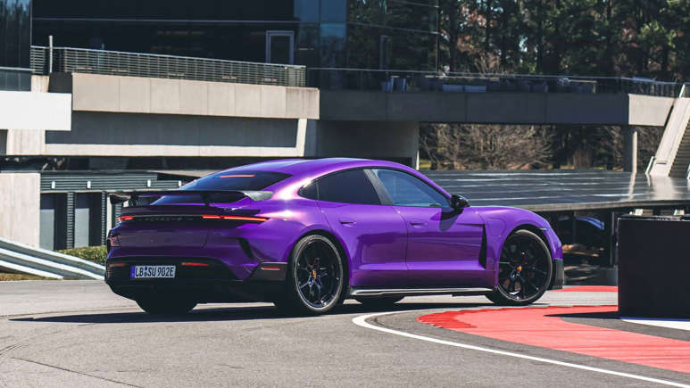
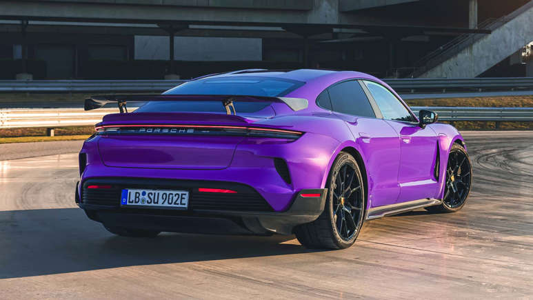
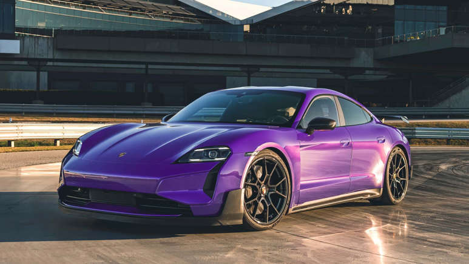
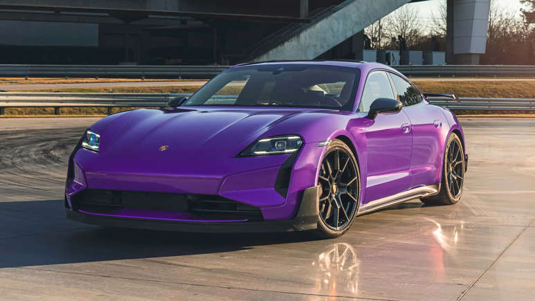
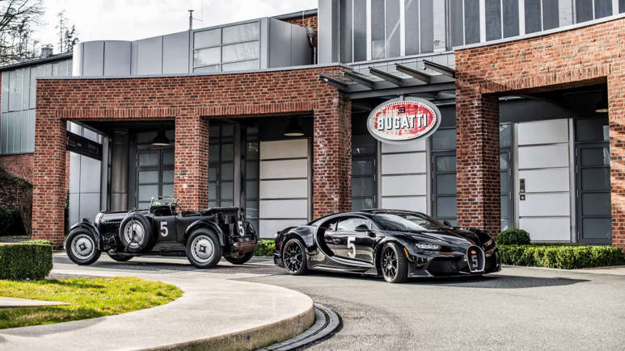
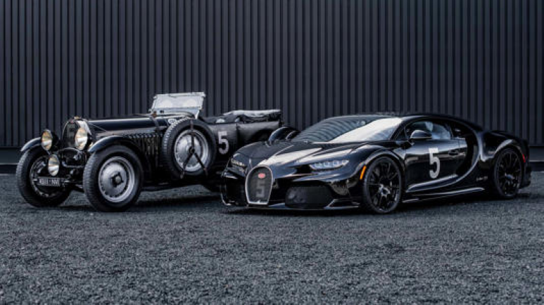

<!DOCTYPE html>
<html lang="en">
<head>
    <meta charset="UTF-8">
    <meta name="viewport" content="width=device-width, initial-scale=1.
    0">
    <title>Media</title>
</head>
<body>
    <style>
      HEADER{
        color: gold;
        font-size: xx-large;
        font-weight: bold;
        font-style: oblique;
        font-family: Arial, Helvetica, sans-serif;
        
      }  
    </style>
    <STyle>
        p{
            color:black;
            font-size: large;
            font-style: italic;
            font-family: Arial, Helvetica, sans-serif;
            font-weight: 100;
            margin-top: 0%;
        }
    </STyle>
    <style>
        @media only screen and(min-width:300px){
            
            
        }
    </style>
    
</body>
</html>
<center><header><u>The 2025 Porsche Taycan Turbo GT With 1,092 HP Is Porsche’s New Performance King</u></header></center>

<p>It’s also the fastest series production electric car around Laguna Seca and the Nürburgring.</p>
<p>Porsche has long prided itself on making lightweight, engaging, precise, and fast cars, prioritizing driving experience over raw performance figures. In the electric vehicle era, this ethos is evolving due to the superior efficiency of electric motors compared to combustion engines. That means Porsche's signature persona now inevitably intersects with four-digit performance figures.</p>
<p>And that's exactly what you're getting today, with the new top-of-the-line Porsche Taycan Turbo GT and the Turbo GT with the Weissach package. This is incontrovertibly Porsche’s new performance king, beating even the decorated 992 911 GT2 RS and the long-gone hybrid 918 Spyder.

    InsideEVs tested one of its sensible siblings in California last month, the 2025 Taycan 4S. We came away impressed with its range and charging performance, despite testing in inclement weather. In fact, the MY2025 Taycans are among the fastest-charging EVs in the U.S. right now.
    In our charging test last month at a 350-kilowatt Electrify America DC fast charger, the Taycan 4S displayed a peak charging rate of 295 kW. It went from 8% to 80% in just 18 minutes. Its real-world range is now comfortably over 300 miles, although we await official EPA ratings. The absurd Taycan Turbo GT, on the other hand, is more about performance than anything else.</p>

<p>Visual Upgrades</p>
  <p>  To set itself apart from the other variants, it features a front spoiler with aero blades. Giving it a beefy track-focused stance are 21-inch lightweight forged wheels and SportDesign side skirts with carbon fiber inlays. The wing mirrors and B-pillars are also finished in carbon fiber. For additional downforce around corners, there’s a new adaptive spoiler, with a Gurney flap that enables a total downforce of 485 pounds.</p>
  
  <p>Inside, it gets 18-way adjustable sports seats and various exclusive elements like unique Turbo GT embroidering and contrasting Volt Blue or GT Silver interior colors.

    But more importantly, Porsche seemed determined to shred as many calories as possible from the Taycan. With the Weissach package, gone are the rear seats. (Four seats are available without the package.) Instead, you get a storage compartment behind the driver and front passenger seats with carbon fiber cladding. This, Porsche says, saves 157 pounds of weight compared to the Taycan Turbo which weighs just a shade above 5,000 pounds.</p>
    
 
   <p>Upgraded Powertrain</p>
       <p>The Taycan Turbo GT features some big upgrades in the powertrain department. New 900-amp pulse inverters—key devices in electric motors that regulate the flow of current into the motor windings—with silicon carbide semiconductors significantly reduce “switching losses” and allow higher “switching frequencies.</p>
       <p>For context, the Taycan Turbo S uses 600-amp pulse inverters. But technical jargon aside, all this means bucketloads of performance.

        Base power is up only slightly, from 764 hp in the Turbo S to 777 hp in the Turbo GT. With launch control, the Turbo S maxes out at 938 hp and 818 pound-foot of torque, whereas the newly unveiled Turbo GT takes that to the next level, with 1,019 hp and 988 lb-ft for two seconds, or 1,092 hp as per Porsche’s peak power measurement method.</p>
        <p>For context, the Taycan Turbo S uses 600-amp pulse inverters. But technical jargon aside, all this means bucketloads of performance.

            Base power is up only slightly, from 764 hp in the Turbo S to 777 hp in the Turbo GT. With launch control, the Turbo S maxes out at 938 hp and 818 pound-foot of torque, whereas the newly unveiled Turbo GT takes that to the next level, with 1,019 hp and 988 lb-ft for two seconds, or 1,092 hp as per Porsche’s peak power measurement method.</p>
            <p>Get the InsideEVs Newsletter
                Sign Up Today
                Porsche isn't chasing the best performance numbers here. With the Weissach package, the Taycan Turbo GT’s maximum straight-line speed is 190 mph, whereas the Model S Track Package tops out at 200 mph, and the Air Sapphire maxes out at 205 mph. However, on a racetrack, the Turbo GT will likely obliterate any other four-door electric sedan with its aerodynamic wizardry.
                
                In fact, it has already done that. A black, low-slung pre-production Taycan with a fixed rear wing, a performance body kit, and German number plates was seen hugging the corners of the Nurburgring at blistering speeds early this year. It was some 17.6 seconds quicker than the Tesla Model S Track Package around the legendary racetrack. We assume Porsche was testing the Turbo GT back then, and it's now entering production.</p>
                
            <p> Price And Availability</p>
                The 2025 Porsche Taycan Turbo GT is now available to order in the U.S. at a starting price of $230,000, excluding fees and destination charges. Deliveries begin in the summer of 2024. The Turbo S costs roughly $20,000 less. With options, the Turbo GT could easily surpass the Lucid Air Sapphire’s $249,000 MSRP. In this company, the $20,000 Track Package for the Model S seems like a bargain.
                
                Porsche has said that the 911 will continue having a combustion engine for "as long as possible." So an electric Taycan at the top of Porsche's performance charts could now be the new normal.
                
               <p> More About Porsche</p>
               <p> The 2025 Porsche Taycan Gets Major Upgrades In Range, Performance And Charging
                Tested: The 2025 Porsche Taycan Charges From 8% To 80% In Just 16 Minutes
                This article may contain affiliate links that Microsoft and/or the publisher may receive a commission from if you buy a product or service through those links.</p>

  


                <header><u>Unique Bugatti Chiron Super Sport Takes After Vintage Le Mans Racer</u></header>

<p>The black-on-black hypercar is a nod to Bugatti's first factory effort at Le Mans.</p>
<p>Like the Veyron before it, the Chiron has spawned more special editions than we can count. Add into the equation that production numbers are higher (500 vs 450 units), and there's no shortage of interesting versions. Before the new Bugatti debuts in the coming months, the house of Molsheim is highlighting the outgoing W16 monster for yet another one-off build.</p>

<p>Based on the hotter Super Sport, this sinister Chiron carries the "Hommage T50S" suffix. No, it's not related in any way to Gordon Murray Automotive's GMA T50s. Instead, it takes after the Type 50S, a race car from 1931. That year, Bugatti made its official factory debut at Le Mans on the iconic Circuit de la Sarthe on its home turf in France. Six years later, in 1937, Bugatti triumphed at Le Mans with the Type 57G Tank.</p>
<p>Because No Two Bugattis Are Alike:</p>
   <p> The 1,826-HP Bugatti Bolide Will Use Brembo's Biggest-Ever Carbon Brakes
    Type 57 Atlantic-Inspired Chiron Proves Bugatti Is Running Out Of Ideas</p>
    <a href="ttu.html"> next </a>